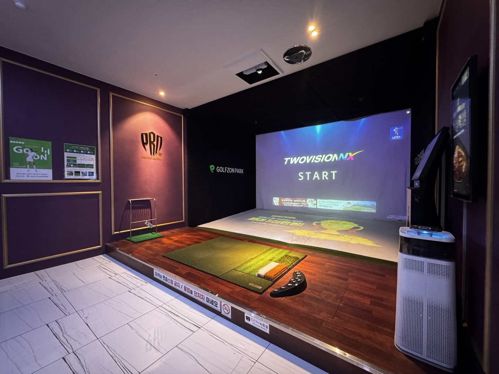
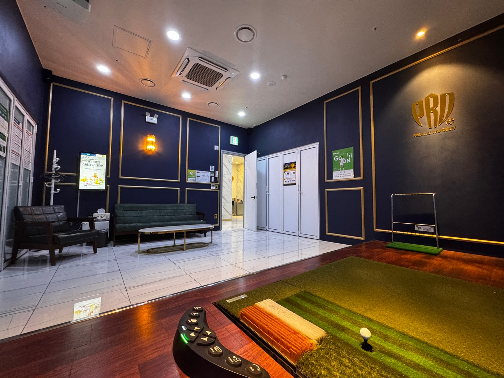
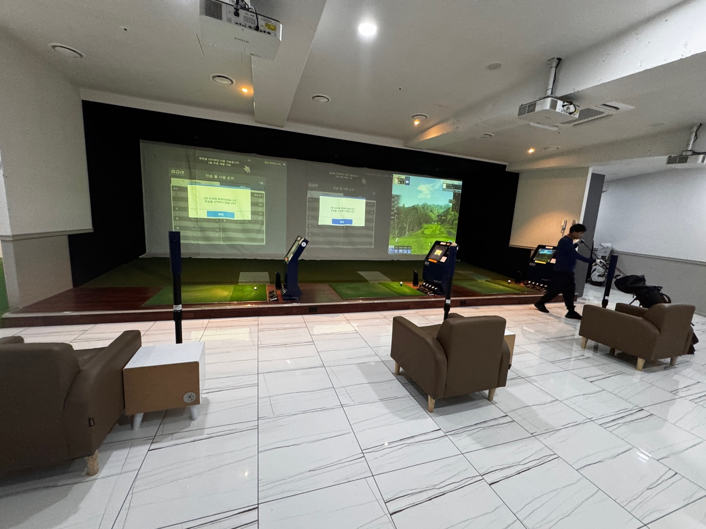
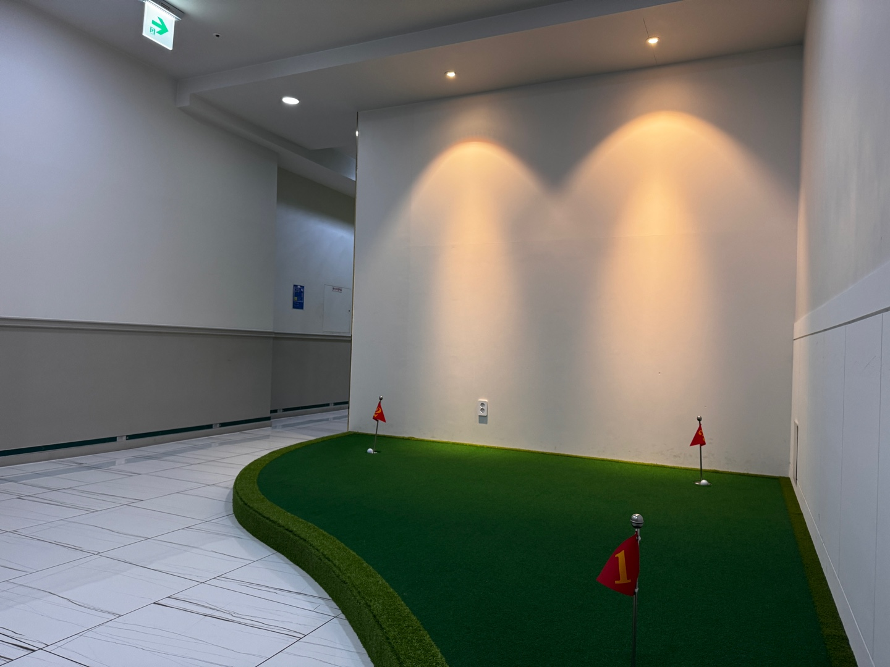
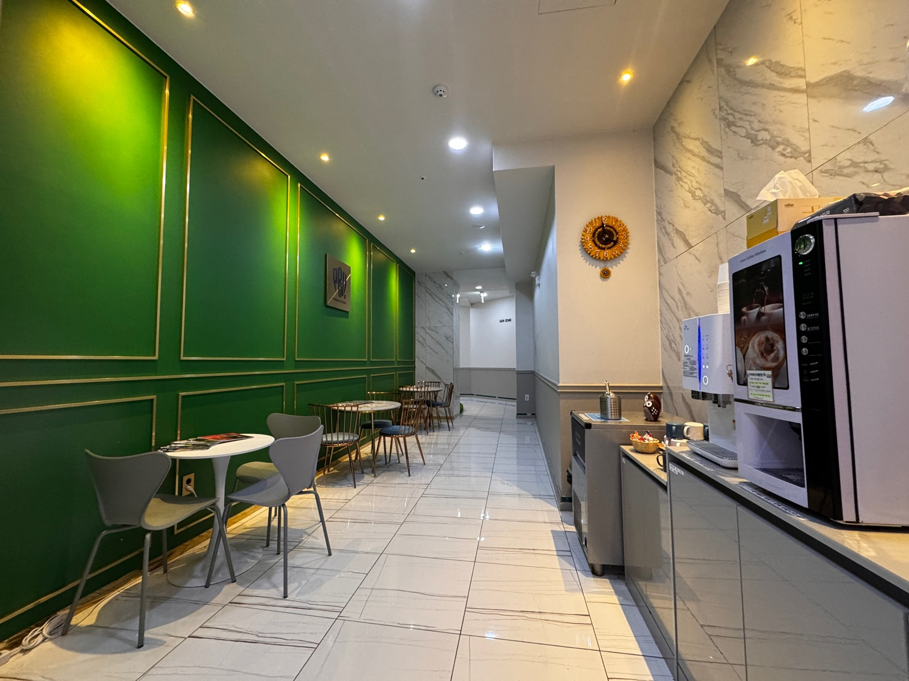

01
TWOVISION NX ROOM
몰입감 있는 스크린과 쾌적한 독립형 룸
프라이빗한 NX 룸부터 연습장, 퍼팅존, 셀프 음료 공간까지 한곳에서 편하게 이용할 수 있도록 준비했습니다. 시간에 구애받지 않고 골프를 즐길 수 있는 24시간 매장입니다.


몰입감 있는 스크린과 쾌적한 독립형 룸

여유롭게 연습할 수 있는 연습장 공간

라운드 전후 감각을 점검하는 퍼팅존

음료와 휴식을 편하게 즐길 수 있는 공간
실제 송정프로샵의 룸과 연습장, 휴게공간입니다.
사진을 클릭하면 크게 볼 수 있습니다.
시간대별 이용요금입니다. 모든 금액은 18홀 1인 기준입니다.
새벽시간은 무인으로 운영됩니다. 이용 중 문의사항이 있으면 매장으로 전화해 주세요.
02-6337-7272※ 이벤트 및 매장 운영 상황에 따라 요금이 변경될 수 있습니다.
CU편의점 뒤편 지상주차장을 이용해 주세요.
CU편의점 옆 카엘리베이터를 이용해 지하주차장으로 내려오시면 됩니다.
매장으로 전화주시면 발렛 가능합니다.
편하신 방법으로 예약해 주세요.
02-6337-7272
‘송정프로샵 24시’ 검색 후 예약 진행
‘송정프로샵 24시’ 검색 후 예약 진행
군자역에서 송정동 방향으로 도보 약 15분. 건영아파트 상가 지하 1층으로 내려오시면 됩니다.
군자역 4번출구·용마초등학교 정류장에서 2012번 탑승 → 세종초등학교·세종사이버대학교앞 하차 → 동일로 방향으로 도보 이동.
건대입구역사거리·건대병원 정류장에서 3220번 탑승 → 송정동건영아파트 정류장 하차.
건영아파트 상가 방향으로 이동 → 동일로 265 건영상가 지하 1층 골프존파크 송정프로샵.
서울 성동구 동일로 265
또는 “골프존파크 송정프로샵” 검색 후 건영상가로 오시면 됩니다.
길 안내 문의 02-6337-7272146 · 242 · 3220 등이 정차하며, 정류장에서 매장까지 도보로 이동 가능합니다.
※ 버스 노선·정류장 위치는 운영기관 사정에 따라 변경될 수 있으므로 출발 전 네이버지도/카카오맵에서 실시간 경로를 확인해 주세요.